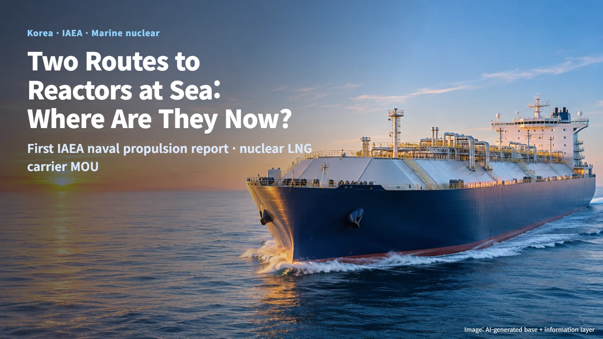
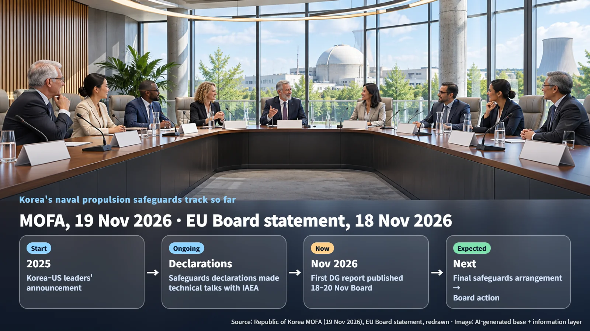
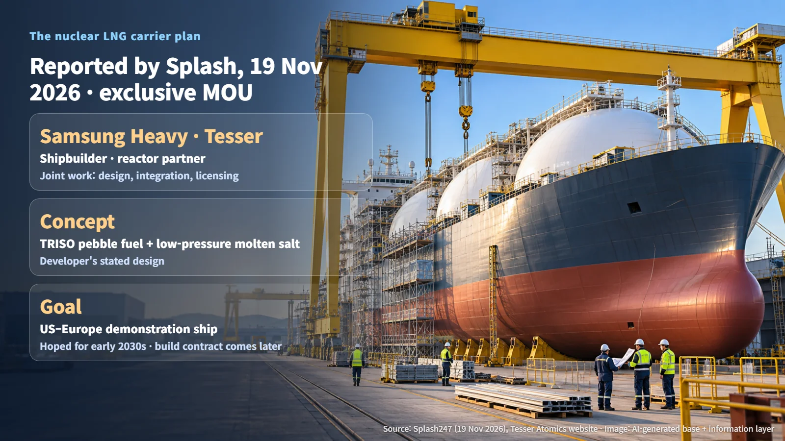
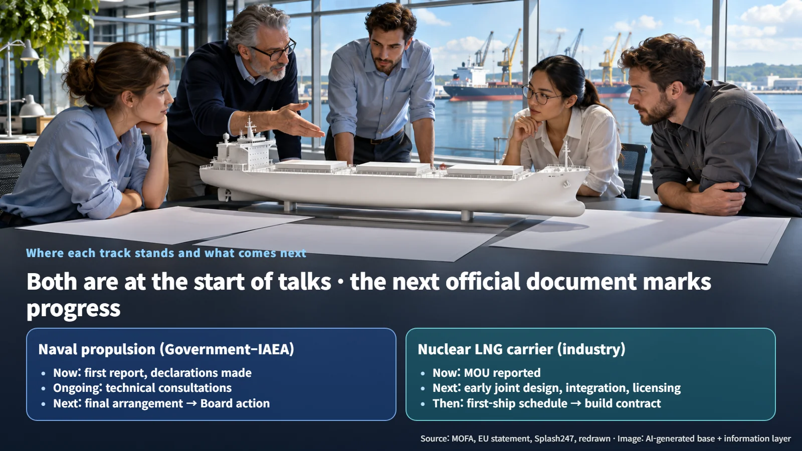

Korea · IAEA · Marine nuclear
Two Routes to Putting Reactors on Ships: Korea's First IAEA Naval Propulsion Report and a Nuclear LNG Carrier MOU
The IAEA published its first Director General report on Korea's naval nuclear propulsion, while Samsung Heavy Industries and Tesser Atomics reportedly signed an MOU on a nuclear-powered LNG carrier.
Two pieces of news linking reactors and the sea arrived on the same day. The Ministry of Foreign Affairs of the Republic of Korea announced that the International Atomic Energy Agency (IAEA) had released its first Director General report on Korea's nuclear-powered submarine program. Separately, the shipping outlet Splash reported that Samsung Heavy Industries and US-based Tesser Atomics had signed an exclusive cooperation MOU to develop a nuclear-powered LNG carrier. One concerns a naval vessel and the other a merchant ship, yet both sit on the same question: what does it take to put a reactor on a ship?
This post sets out where each effort stands today and which steps come next.

What Korea's First IAEA Director General Report Covers
On November 19, the Ministry of Foreign Affairs announced that the IAEA had published its first Director General report on Korea's nuclear-powered submarines. The report is titled "Naval nuclear propulsion: Republic of Korea," and it was discussed in connection with the regular IAEA Board of Governors meeting held in Vienna on November 18–20. According to the ministry, the report covers communications since the related 2025 announcement by the leaders of Korea and the United States, Korea's implementation of its safeguards reporting obligations, and the record of technical consultations. It was issued for the first time because Korea and the IAEA have begun consultations on the matter.
The key term here is safeguards. Safeguards are the system through which the IAEA accounts for and verifies that a country's nuclear material is used only for its declared purposes. A bank account offers a useful comparison: every deposit and withdrawal is recorded in the ledger (declaration and accountancy), and an outside auditor checks the ledger against the actual balance (verification). Korea carries these reporting obligations under its Comprehensive Safeguards Agreement and its Additional Protocol, the two documents that form the basis of its declarations.
At the same Board meeting, the EU issued a statement on November 18 welcoming Korea's implementation of its reporting obligations under the Comprehensive Safeguards Agreement and the Additional Protocol. The EU noted Korea's commitments on the management of low-enriched uranium and on developing appropriate safeguards arrangements, and it stressed continued transparency and reporting.
Why would new safeguards arrangements need to be developed? At a land-based power plant or research facility, nuclear material stays in one place, so inspectors can compare records against physical inventory at fixed locations. Nuclear material intended for a vessel's propulsion reactor travels with the ship, so the way declaration, accountancy and verification are applied has to be worked out specifically. This report is the first document to record, before an international board, that those consultations have formally begun and that Korea is meeting its existing reporting obligations. What changes is that Korea's nuclear submarine discussion has moved from bilateral announcements into a formal process within the IAEA's multilateral verification framework.

The Nuclear LNG Carrier: A Reported MOU and the Developer's Technology Concept
On the same day, Splash reported that Samsung Heavy Industries and Tesser Atomics had signed an exclusive cooperation MOU to develop a nuclear-powered LNG carrier. The roles are clearly divided: Samsung Heavy Industries is the shipbuilding partner and Tesser is the reactor partner, and the two will cooperate on design, integration and licensing.
The report names a demonstration vessel operating between the United States and Europe as the goal and quotes a Tesser spokesperson directly. The companies hope for deployment in the early 2030s, and the specific schedule for the first vessel will be set during initial joint work. A construction contract and a firm delivery date will follow from that initial work. The MOU terms currently rest on Splash's reporting, and an official company announcement is the next item to confirm them.

Tesser's official website describes a marine reactor that uses pebble fuel containing TRISO particles and low-pressure molten salt cooling, with Atlantic LNG routes as the initial application. In plain terms:
- TRISO particles: tiny fuel kernels wrapped in several layers of ceramic coating. The layered shell keeps the material produced in the fuel contained inside.
- Pebble fuel: many of these particles gathered into a ball-shaped fuel element, like a pebble.
- Low-pressure molten salt cooling: using salt melted at high temperature as the coolant, which carries heat without needing high pressure.
This configuration, along with features such as refueling during operation and the economics, represents targets set by the developer, and a demonstration vessel is the path to confirming performance.
Compared with a land-based plant, a shipboard reactor adds items that must be reviewed together. On the technical side, these include ship motion as the hull moves in waves, load following as power rises and falls with sailing speed, decay heat removal after the reactor shuts down, and fuel handling at sea or in port. On the regulatory side, nuclear regulators work alongside the classification society that certifies ship safety, the flag state where the vessel is registered, and the port authorities where it calls. Earlier posts on the dual NRC–ABS pathway for a floating molten salt reactor and on the MarNuPS integrated test covered parts of this challenge. Naming "design, integration and licensing" as the scope of this MOU signals that the first task is to fit the reactor and the hull together as one system, with the regulatory path designed alongside it.
Where Each Effort Stands and the Next Gates
Placing the two efforts in the same frame makes their positions clear.
| Stage | Nuclear submarine (IAEA safeguards) | Nuclear LNG carrier (Samsung Heavy Industries–Tesser) | |---|---|---| | Done so far | First Director General report released; reporting obligations assessed (ministry announcement, Nov 19) | Exclusive cooperation MOU reported (Splash, Nov 19) | | In progress | Korea–IAEA technical consultations (government plans to continue) | Initial joint work: design, integration, licensing | | Next gate | Finalizing the safeguards arrangement | Setting the first vessel's schedule, then a construction contract | | After that | IAEA Board action once the arrangement is finalized (expected by the EU) | Deployment in the early 2030s (hoped for) |
(Source: compiled from the Ministry of Foreign Affairs of the Republic of Korea press release, the EU statement to the IAEA Board, and Splash247 reporting)
For the submarine, the next step is finalizing the safeguards arrangement through technical consultations, after which the EU expects the Board to take appropriate action. Approval to build the submarines is likewise a separate step that comes after this report. For the LNG carrier, initial joint work sets the first vessel's schedule, and the construction contract and delivery date follow from it.
What the two share is that both are at the stage where consultation and cooperation have just begun. The yardsticks for progress are equally clear: for the submarine, the final safeguards arrangement and subsequent Board action; for the LNG carrier, an official company MOU announcement and a construction contract. When new updates appear, asking "which cell in this table did this announcement fill?" is a reliable way to read how far each route to putting reactors on ships has advanced.
